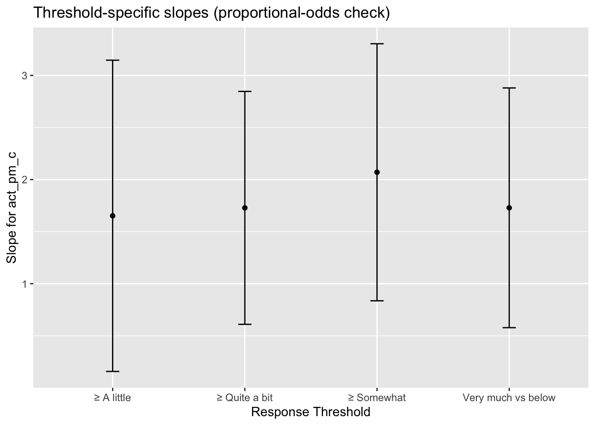

![]()

Verbal and nonverbal sexual consent cue use among university students
A micro-longitudinal investigation
Keywords
Sexual consent, Sexual assault, College student, Alcohol
SPECIFIC AIMS
Sexual consent is a complex process involving thoughts, feelings, and behaviors used to determine and express willingness to engage in sexual activity with a particular person in a particular context; the presence of consent distinguishes wanted sexual encounters from sexual assault.1 People can communicate consent using active consent cues, which may be verbal or nonverbal and direct or indirect, ranging from a clear and spoken “yes” to subtle body language.2 Programs designed to prevent sexual assault often target consent communication, but a substantial gap exists between their curriculum and the varied consent practices that young people use during sexual encounters.3 Individual factors such as demographics, attitudes,4 and typical behavior5 are linked to differences in consent cue use. Gender, for instance, is a significant factor,6 but there is mixed evidence regarding its associations with consent cues. Some research suggests men are more likely than women to use verbal cues relative to indirect, nonverbal cues, while other studies observe interactions or trends that imply gender differences hinge on context.8 Unpacking the complexity around person-level and situational factors could illuminate more information about the conditions under which particular individuals are likely to use certain types of consent cues.
Research on the contexts in which individuals use certain consent cues has been limited. This is a problem because situational factors such as sexual behavior type, co-occurring intoxication, and feelings of arousal and pleasure are linked to within-person differences in consent cue use.10 Within-person variability has been shown to account for more than 70% of the variance in sexual consent cues,11 indicating that context may be more informative than individual differences in how people communicate consent in general. Researchers examining situational factors related to consent have done so by conducting systematic, within-person comparisons of two matched events,7 or by grounding responses to each person’s most recent sexual encounter, which could have occurred weeks to months in the past.12 By asking people to remember past events, these studies risk greater recall bias relative to micro-longitudinal studies, which assess situational factors closer in time to when consent communication occurs.
Although diaries and ecological momentary assessment have been used extensively in other behavioral science research to illuminate important time-varying situational predictors of health-risk behaviors,15 only one published investigation of this kind has been conducted in the sexual consent research space. Willis and colleagues surveyed participants three times per day for 28 days and found that those engaging in more intimate sexual behavior (i.e., vaginal or anal penetration) reported more active consent communication than those engaging in less intimate behaviors, while no significant event-level associations between alcohol use and verbal or nonverbal consent cue use were observed.11 However, this research examined a limited set of predictors and reflected a specific subpopulation of adults in committed relationships; the current project builds on their findings by probing person- and event-level associations with consent cue use among college students while expanding the range of possible predictors. Examining these associations in different samples and in relation to a wider array of variables is a crucial next step toward isolating more actionable targets for consent communication interventions.
To advance the field, this project leverages micro-longitudinal data to identify proximal situational correlates of verbal and nonverbal consent cues that explain variance above and beyond the effects of significant individual factors. I will approximately 500 sexual events reported by 152 college students to extend previous research investigating between- and within-person variation in consent communication, with the goal of informing future research and sexual assault prevention efforts focused on changing consent behavior. Specifically, I propose the following aims.
Aim 1: Characterize between-person differences in consent cue usage.
We will examine attitudinal and behavioral of consent cue usage and whether use varies by gender. Hypotheses: (H1a): More permissive individual and perceived peer attitudes toward alcohol-involved consent and sexual coercion/rape will be negatively related to verbal and nonverbal cue use, particularly among men vs. women. (H1b): Sexual risk behavior, hazardous alcohol use, and typical nonverbal approach to consent will be negatively related to verbal consent cue use, and these associations will not differ by gender.
Aim 2: Estimate within-person associations between situational factors and consent cue usage.
We will examine relational, perceptual, and behavioral time-varying correlates of consent cue usage. Hypotheses: (H2a) Greater differences in participant vs. perceived partner intoxication will be positively related to consent cue use for encounters involving more familiar partners (current/former dating partner > friend > stranger). (H2b) On days when participants drink more than their own average, consent cue use will be significantly reduced after accounting for the effects of aggregate alcohol use across the study period.
Aim 3: Test hypotheses and evaluate whether cross-level interactions improve model fit.
Considering the relative nascency of this literature, we will use findings from Aims 1 and 2 to determine whether there are interactions that should be considered in addition to the following theoretically-driven Hypotheses: (H3a) The negative association between permissive individual attitudes toward alcohol-involved consent and cue use will be stronger for encounters involving alcohol use. (H3b) Pre-encounter alcohol consumption (-), sexual behavior type (+), and social desirability bias (+) will be significantly related to verbal consent, such that lower drink counts, more intimate sexual acts (involving penetration > kissing, touching), and higher levels of impression management/self-deceptive enhancement will positively predict verbal cue use within the concurrent, 24-hour window.
BACKGROUND AND SIGNIFICANCE
Understanding between-person predictors of active consent cues.
Rates of sexual assault on U.S. college campuses remain virtually unchanged after more than 30 years of dedicated research and intervention.17 Lack of consent is increasingly recognized as defining characteristic of sexual assault, leading institutions to incorporate consent-focused education into violence prevention efforts.19 University policy and educational initiatives promote explicit and enthusiastic consent communication (“only yes means yes!”), while young people often rely instead on passive cues (not resisting, not saying no) and assumptions (“We love each other”)8 to determine consent.20 Sexual consent education aims to promote the use of active cues by enhancing consent knowledge and positive attitudes while decreasing rape-supportive attitudes, presuming that attitudes shape consent behavior. However, these interventions do not have a clear underlying mechanism of behavior change, and they rarely assess behavioral outcomes.21 A prerequisite to improving upon the value of consent education is testing whether these attitudinal intervention targets predict actual in-the-moment cue use and contrasting their explanatory power with that of other between-subjects factors.
Typical and historical behavior
Hazardous alcohol use and sexual risk-taking
Alcohol is a salient factor in the context of both sexual assault and consensual sex among college students, yet sexual assault prevention and risk-reduction programs rarely include information about how alcohol can affect consent communication.20 21 While scholars and practitioners have started integrating alcohol and sexual assault programming,37 27,28 there is far more research on alcohol-related sexual assault compared to consent involving alcohol use. 22 Some research suggests that young adults who engage in binge drinking generally use less active consent communication than those who do not binge drink,5 5 but the intensity of alcohol consumption at the encounter level may be more directly relevant to in-the-moment. Still, cross-sectional surveys cannot establish whether real-world drinking events decrease the incidence of active consent cues, and few micro-longitudinal studies have explicitly investigated situational factors linked to within-person differences in consent communication.
Situational correlates of within-person variability in cue use
Event-level alcohol consumption
As previously mentioned, Willis and colleagues found no significant event-level associations between alcohol use and consent cues.9 A daily diary dissertation study found that, among college women engaging in casual sex, Blood Alcohol Estimate was negatively associated with consent expression, but this relationship was no longer significant when the sexual behavior type was included in the model.10 One potential explanation is that an individual’s alcohol consumption is more likely to result in them communicating consent differently than they typically would on days when their alcohol use is also atypical–representing a deviation from their own personal norm. This hypothesis is supported by previous research which shows that, on days when women drink more than their own average, they are more likely to experience negative sexual consequences later that day.39
Event-level perceived intoxication
Young adults also recognize and describe themselves adjusting the strategies they use to communicate sexual consent based on their perceptions of their own intoxication relative to that of a potential partner, but this recurring theme in qualitative and vignette-based research has proven difficult to explicate quantitatively.40 One hypothesis is that the extent to which perceived differences between one’s own and their partner’s intoxication relate to their use of verbal consent cues depends on their level of familiarity with that partner. For example, if someone knows the other person involved in a sexual encounter well and is motivated to maintain a positive relationship with them moving forward, they may be more motivated to voice their own consent verbally and to check in with that other person about their degree of intoxication and capacity to consent before proceeding with sexual activity. This hypothesis is supported by the ‘date rape’ literature, which indicates that sexual assaults involving mutual alcohol consumption are more likely to take place outside the home and involve someone less well known to the victim.41
Partner familiarity and sexual precedence
The relationship or degree of familiarity between two people involved in a sexual encounter has been related to differences in consent communication, though existing research has produced paradoxical conclusions regarding the nature of these associations. Sexual precedence–the idea that engaging in consensual sex at one point in time implies consent can be assumed for future encounters with that same person–is supported by research showing people perceive a greater need to directly communicate about consent when partners are not in a committed relationship.42 Yet, cross-sectional survey research among U.S. college students indicates that explicit verbal consent cues are less likely to be used when the sexual relationship is casual. Internal consent feelings (safety, comfort) tend to be higher for encounters with committed dating partners and lower for one-time partners,43 and internal consent feelings are strong predictors of consent cue use, but patterns observed over time within relationships suggest a complex relationship between shared sexual history and consent communication that warrants further evaluation.44
Significance of proposed research
Conflicting findings and gaps in the literature highlight a pressing need for research grounded in real-time lived experiences that can help to explain what relational and situational factors are linked to differences in the degree to which university students’ use different consent cues. Experiential sampling via daily reports can facilitate a more nuanced understanding of the contexts that make verbal and nonverbal consent communication less likely during students’ sexual encounters. Knowledge of these contextual factors can then be used to inform ecological momentary interventions designed to be delivered when and where the evidence suggests they will be most effective–an approach that has shown promise for reducing risk of sexual revictimization among college women.45
Method
The proposed research will use baseline and 28-day daily diary data to move beyond the limitations of prior studies, allowing us to consider interdisciplinary correlates of active verbal and nonverbal sexual consent cues across levels of analysis. Any distal, person-level predictors identified as important will have their relative contributions verified in a model that also includes proximal situational factors, increasing confidence that these are reliable targets for intervention or further theory development. Our lab collected these data from students at a large public university in the midwestern U.S. between October and mid-December of 2022.
Participants
We used Sona Systems to recruit participants from an online subject pool of undergraduates taking introductory psychology courses. We invited eligible students to participate via email. Participants were made aware that the study had two parts: a 30-minute baseline survey, and up to 28 daily diary surveys. At the end of the baseline survey, students were asked whether they had a smartphone AND whether they wanted to opt into the daily diary portion of the study. Those who responded affirmatively to both were enrolled in and pushed daily survey links through SMS for 28 days.
Eligible participants were those 18 years or older who owned a smartphone and reported consuming at least one alcoholic beverage in the past year. A total of 386 students met eligibility criteria and completed at least 20% of the baseline assessment. Of these, 278 students participated in the daily diary portion of the study. Participant ages ranged from 18 - 23. Participants who endorsed partnered sexual activity (n = 152) reported 501 events in total.
Procedures
The research team used Qualtrics to construct a series of data collection instruments for web-administration, and SurveySignal to send daily text messages with links to each daily diary survey. After providing informed consent, participants gained access to the baseline assessment via Qualtrics. After completing the baseline, each participant received (1.0) class credit as compensation, which translates to an additional percentage point on their final grade in their introductory psychology course. Students with a smartphone were then given the option to participate in the daily diary portion of the study. Every day for 28 days, each participant who opted in received a text message between 11:00 AM and 2:00 PM with a link to that day’s survey. Each day, those who had not yet opened the survey link also received a reminder text message two hours after the initial text was sent. For each complete daily diary, participants received 0.25 class credits as compensation. To incentivize responding, participants who completed all 28 daily diary surveys received a $20 Amazon.com gift card in addition to the 7.0 extra credit percentage points (28 x 0.25 class credits).
The baseline and daily diary surveys were designed to capture theoretically and empirically supported personal and contextual factors, respectively. The measures we selected were drawn from peer-reviewed research examining sexual consent and assault.
Measures
Baseline
Demographic measures assessed gender, age, race, sexual orientation, year in school, relationship status, campus involvement (e.g., Greek life, athletics), residence (e.g., dormitories), disability status, and socioeconomic indicators (e.g., Pell grant recipient). Individual attitudes: assessed with the Illinois Rape Myths Acceptance scale (7 items);27 Sociosexual Orientation Inventory (3 items);46 and the subtle coercion subscale of the Process-Based Consent scale.47 Perceived peer attitudes: assessed with the Rape Attitudes and Beliefs Scale (2 items)48 and Alcohol and Sexual Consent scale (2 items).28 Individual behavior: assessed with the Alcohol Use Disorders Identification Test (10 items);49 original and adapted Sexual Risk Behavior Scale (6 items);51 and Sexual Consent Scale-Revised (3 items).52 Trait emotion dysregulation was assessed with the Difficulties in Emotion Regulation Scale (16 items).53
Daily Diary
Each daily diary prompted participants to report on behaviors and experiences since their last survey and began with five behavioral screening items assessing (1) partnered sexual behavior, (2) alcohol use behavior, (3) online sexual behavior, (4) solitary sexual behavior, and (5) drug use behavior. We designed the daily surveys so that each participant would complete 1-2 survey blocks per day assigned based on their responses to the screening items. When a participant responded “No” or “Prefer not to respond” to all five screening items with corresponding behavior blocks, they were assigned to a general mental health block. Survey blocks were all comparable in length and focused on sensitive topics to discourage selective responding and ensure that each person received roughly the same number of follow-up questions per day, regardless of the experiences they endorsed on the screening items.
Survey blocks were rank-ordered from 1-5 and prioritized partnered sexual behavior and alcohol use behavior data, such that, whenever a participant responded “Yes” to more than two screening items, branching logic directed them to the two-highest ranked survey blocks. The screening item for partnered sexual behavior read, “Since the last survey, have you hooked up, engaged in any sexual activity, or tried to engage in any sexual activity with another person (including flirting, kissing, touching, or intercourse)?” Response options were: Yes (= 1), No (= 0), Prefer not to respond (= 3).
Relational
Relationship to partner: Participants responded to the question, “How did you know this other person?” by selecting one of the following familiarity levels from a list of response options: “I didn’t, we just met that day;” “They are an acquaintance;” “They are a friend;” and “They are my current or past dating/intimate partner.”
Sexual precedence: Participants responded to the question, “Had you ever had sexual contact with this person in the past?” with response options Yes (=1) and No (=0).
Perceptual
Perceived intoxication: Participants rated their own intoxication (“How intoxicated did you feel right before or during this sexual activity?”) and their perception of their partner’s intoxication (“How intoxicated do you think the other person felt right before or during this sexual activity?”) using a sliding scale from “Least intoxicated ever felt” (=0) to “Most most intoxicated ever felt” (=100).
Intoxication disparity: A continuous intoxication “disparity” variable will be calculated as the absolute difference between self-reported intoxication and perceived partner intoxication. Larger values indicate lower perceived alignment between self- and partner- intoxication. We also will create a factor variable with categories for equal intoxication (Parity), for when the participant perceived themselves as more intoxicated (Self-Higher), and for when the participant perceived the other person as more intoxicated (Partner-Higher).
Behavioral
Sexual behavior type: Participants were instructed to select all that apply from a list of specific behaviors that captures escalating levels of physical intimacy aligned with previously established sexual hierarchies: Kissing (=1); Touching (=2); Penetration with fingers or fingering (=3); Oral sex (=4); Vaginal sex (=5); and Anal sex (=6).54 An additional response option read, “I tried but no sexual contact happened,” and encounters for which this was the only response will not be included in the present analysis. A dichotomous variable comparing events involving Contact (kissing, touching) with those involving Penetration will be created, as will an ordinal event-level variable if representation across behaviors permits this level of granularity. The Contact v. Penetration distinction is what differentiates Sexual Assault from Rape in policy and criminal justice contexts as well as within the scientific literature.
Pre-encounter alcohol consumption: Participants were asked, “How many drinks did you consume prior to or during this activity?” with response options for the following drink counts: 0; 1-2; 3-4; 5-6; 7-9; and 10+ drinks.
Outcome variables
Consent cue use: After reading the question stem, “To what extent did you do the following during the sexual activity?” participants rated the following three items on a unipolar, 11-point sliding scale ranging from 0 (“Not at all”) to 10 (“Very much”).55

- Verbal: “Directly asked your partner or communicated verbally with your partner about consent.”
- Nonverbal, Direct: “Used direct nonverbal signals to communicate with your partner about consent for the sexual activity.”
- Nonverbal, Indirect: “Used subtle signals to communicate with your partner about consent for the sexual activity.”
Validity of outcome measures
Despite the need for and potential benefits of using experience sampling methods (ESM) to examine alcohol-involved sexual consent experiences,marcantonioHowDoes? there also are unique challenges associated with this approach. One such challenge is the increased commitment and investment of effort that repeatedly completing assessments requires from participants.56 ESM researchers can mitigate participant burden by making surveys brief, a common but imperfect solution that frequently necessitates measuring variables with just a few items per construct.57 Measures composed of only one or two items are often criticized by researchers with well-founded concerns that they might be unreliable, more susceptible to measurement error, or fail to capture complex constructs.58 Still, other researchers demonstrate that repeatedly administering assessments yields multiple indicators, decreasing random measurement error,60 and argue that relying on single-item measures is acceptable when these items are carefully developed and evaluated for multiple sources of measurement validity.wolfersShortStill2025?
In the sections that follow, I review literature detailing how the items used to measure verbal and nonverbal consent cue use for the proposed research were originally developed and tested by a separate research team. I then discuss evidence of measurement validity from previous research before describing the use of these items and their psychometric properties in the current sample.
Initial development & evaluation
Active consent communication is the use of words or behaviors (i.e., cues) to communicate to another person agreement to engage in sexual activity. It is also referred to as “external” consent communication because these words and behaviors are used to outwardly express one’s internal feelings of willingness to participate in the sexual behavior. Although prior research reviewed in this proposal suggests that sexual consent varies from one encounter to the next, the only validated consent measures that existed until recently were those developed for cross-sectional research43. As such, Willis and colleagues used a two-phase procedure to develop and evaluate brief measures of internal consent feelings and external consent cues specifically designed for use in ESM studies.55
In Phase I, the research team sought to develop items that best represented the constructs of interest while demonstrating both face validity and content validity. To do so, operational definitions for the external and internal consent were derived from seminal theoretical research and systematic reviews of the sexual consent literature. Cognitive interviews were then conducted with sexually active adults (n = 10) using concurrent probing to assess sample item comprehension, preferred wording, and interpretation. Three content-matter experts from the field of sexual consent research and three measurement experts with doctoral training in psychometrics also provided ratings to determine the degree to which sample items captured their corresponding operational definitions. The research team then calculated IIOC values for content alignment (cutoff .75) to establish which prospective items had higher content validity. Items were selected for Phase II by balancing participants’ judgments and experts’ IIIOC ratings.55
In Phase II, items derived and refined in Phase I were administered in a seven-day pilot study, with the ESM survey sent to participants (n = 12) four times per day. Following the study period, pilot participants completed an exit survey that collected feedback on the sexual consent measures and assessed their acceptability in the broader context of the ESM study design. Findings included within-person associations between internal and external sexual consent that were consistent with preexisting theory and research asserting these are separable but related facets of a multidimensional process [cite]. For instance, verbal and nonverbal consent cues were both positively associated with internal consent feelings of safety/comfort and readiness; verbal cue use was also positively associated with internal feelings of agreement/want, while nonverbal cue use was not. Further, external consent communication was not associated with alcohol use at the encounter level for participants in committed relationships, replicating discriminant patterns observed in previous research.62 We contextualize these findings and the pilot participants’ feedback in the sections that follow.
Preexisting validity evidence
Willis and colleagues established feasibility for ESM administration and solid content and response-process foundations for their external consent cue items.55 However, gaps remained in the evidence base for these measures’ validity following their initial publication, some of which have since been addressed.
Recent recommendations for validating single-item ESM measures call for concurrent associations at the within-person level, as well as situational sensitivity that demonstrates predictable within-person changes linked to theory-driven contextual correlates.wolfersShortStill2025? These guidelines from the field of communication science suggest evidence concerning within-person concurrent validity is present when a distinct but theoretically-related variable significantly predicts the focal outcome with a standardized effect size greater than .09.wolfersShortStill2025? This was the case in an ESM study wherein the researchers fit multilevel models and found that a composite internal consent feelings score significantly predicted verbal (β = .53, p < .001) and nonverbal (β = .45, p < .001) consent cue use11. The same study demonstrated event-level situational sensitivity to type of sexual behavior within the same person. Specifically, encounters involving more intimate sexual behaviors predicted higher consent communication scores compared to encounters reported by the same person involving less intimate behaviors (β = .32, p < .001).
To establish multi-level validity of single-item ESM measures, evidence is required both within and between-persons.wolfersShortStill2025? Recent research by Shi and colleagues offers support for between-person concurrent validity in a sample of Chinese adults in mixed-gender relationships.63 Specifically, explicit-verbal consent communication significantly predicted greater sexual satisfaction during participants’ most recent sexual event with their partner (β = .31, SE = .01, \(R^2\) = .10, p < .001), and implict-nonverbal consent communication significantly predicted greater sexual satisfaction in general (β = .13, SE = .01, \(R^2\) = .08, p < .001).63
The brief measure of external consent55 consists of four items that were developed to measure four types of active consent cues identified through previous research: verbal (“I verbally communicated…”), nonverbal (“I nonverbally communicated…”), explicit (i.e., direct; “I used straightforward signals to communicate…”) and implicit (ie., indirect; “I used subtle signals to communicate…”). Researchers using the measure have tried to operationalize active external consent using a composite score derived from participants’ responses to these four items, with variable success. Across three studies by Shi and colleagues using three separate datasets, their team found that the four-item composites consistently had poor reliability (αs < .60).63 This pattern of findings aligned with that of another study by Willis and colleagues, wherein internal reliability was not strong for a composite including verbal, nonverbal, explicit, and implicit consent cues.11 Moreover, across the Shi and Willis studies, verbal cues were highly positively correlated with explicit cues, and nonverbal cues were highly positively correlated with implicit cues.11
Consent cue items in the current sample
In the pilot study that was initially conducted to validate the internal and external consent measures, the research team solicited open-ended feedback from participants. When queried about whether any of the survey questions sounded awkward or lacked clarity, a few participants expressed confusion regarding the explicit item’s phrasing (e.g., “It is unclear to me what this question (on straightforward signals) means”), as well as uncertainty about the distinction between ‘nonverbal’ and ‘subtle’ communication (e.g., “how is nonverbal different than ‘subtle’ communication?”, “What differentiates the two?”).55
Considering pilot participant feedback, strong positive correlations between verbal and explicit cues reported in previous studies,11 and the goals of the current research, we decided against including the explicit/“straightforward” cue item in our daily diary. We did include both the nonverbal and implicit cue items, but we observed the same pattern described in previous research. Specifically, nonverbal cues were highly positively correlated with implicit cues \((r = .73)\). Considering this strong correlation and the preregistered strategy for addressing it reported in prior work,63 the nonverbal and implicit cue items were averaged to create a composite Nonverbal score.
Finally, the internal consistency for the verbal, nonverbal, and implicit cue items was < .6 (α = 0.57), while the Nonverbal (composite) and Verbal (single-item) scores were only weakly correlated \((r = .12)\). Given the insufficient empirical support for combining all three items and the goals of the current research, this dissertation will examine Nonverbal and Verbal cue use separately. Higher scores indicate greater use of each type of cue to communicate consent to engage in sexual activity.
Validity in the current sample
To evaluate between-person convergent validity in the current sample, I examined the associations between participants’ baseline reports of verbal (verbb_ong; “I always ask verbally for consent at each step of a sexual encounter”) and nonverbal (non_vrb_bsl; “Typically, I communicate sexual consent to my partner using nonverbal signals and body language”) consent, and their average levels of verbal and nonverbal cue use, respectively, across all sexual encounters reported in the daily diaries. Higher correlations between corresponding baseline and diary measures would indicate that individuals who report more frequent use of a particular type of consent cue in general also tend to report greater use of that cue across diary-reported events. I aggregated the event-level diary data to the person level by computing each participant’s mean verbal (verbal_means) and nonverbal (mean_nonverb) cue use, thereby aligning the level of analysis (between-person) with the baseline measure and respecting the hierarchical structure of the diary data.
Between-person convergent validity was supported for both verbal and nonverbal consent cue use. Participants who reported greater use of verbal consent cues at baseline also tended to report higher average verbal cue use across diary-reported encounters, \(r(152) = .54, p < .001\). The corresponding association for nonverbal consent cues was smaller but significant, \(r(152) = .20, p < .001\), indicating a consistent—albeit weaker—relationship between baseline and event-level nonverbal consent communication.
To evaluate within-person concurrent validity, we examined whether event-level sexual feelings (a composite of subjective arousal and pleasure; psb_feel_wp) predicted same-event verbal and nonverbal consent cue use. Results indicated that when participants reported higher-than-usual sexual feelings during a sexual encounter, they also reported using more verbal, β = 0.17, SE = 0.03, t(348) = 5.77, p<.001, 95% CI [0.11, 0.23], and nonverbal, β = 0.13, SE = 0.03, t(345) = 5.27, p<.001, 95% CI [0.08, 0.18], consent cues. These findings provide evidence of within-person concurrent validity, suggesting that higher situational sexual arousal and pleasure co-occur with greater active consent communication.
To test event-level situational sensitivity, we examined whether type of sexual behavior (Contact vs. Penetration; act_c) predicted verbal and nonverbal consent cue use. Encounters involving penetration (vs. contact-only) were associated with greater verbal cue use, β = 0.24, SE = 0.04, t(488) = 5.78, p<.001, 95% CI [0.16, 0.32], and greater nonverbal cue use, β = 0.10, SE = 0.04, t(459) = 2.80, p = .005, 95% CI [0.03, 0.17]. These results support situational sensitivity by showing that participants’ consent communication varies appropriately with the intimacy of the sexual behavior reported.
Outcome distributions
The continuous event-level outcome variables representing verbal (ver_pc) and nonverbal (non_verb) consent cue use were visually and statistically evaluated for distributional properties. Each variable was measured on a 0–10 scale, reflecting how much participants used verbal and nonverbal cues to communicate consent during a given sexual encounter.
Histograms, density plots, and summary statistics were inspected to assess normality, skewness, and potential ceiling or floor effects. Both ver_pc and non_verb displayed non-normal distributions.
Specifically, bimodality was observed, with many responses clustering near the lowest (0) and at upper-most anchor (10).
The distributions were right-skewed, showing pronounced piling at the maximum value (10), suggesting limited variability among participants reporting high levels of cue use.

Because the response scales were both bounded (0–10) and anchor-labeled (“Not at all” to “Very much”), the continuous treatment of these data risked overstating precision and violating linear model assumptions. To accommodate the non-normal distribution, both outcomes were recoded into five ordered categories (i.e., Not at all, A little, Somewhat, Quite a bit, Very much).
d <- d %>%
mutate(
verb_bins = cut(
ver_pc,
breaks = c(-Inf, 0, 3, 6, 9, Inf),
labels = c("Not at all", "A little",
"Somewhat", "Quite a bit", "Very much"),
right = TRUE,
include.lowest = TRUE),
verb_bins = ordered(verb_bins,
levels = c("Not at all", "A little",
"Somewhat", "Quite a bit", "Very much")))
# Verify
is.ordered(d$verb_bins)[1] TRUEtable(d$verb_bins, useNA = "ifany")
Not at all A little Somewhat Quite a bit Very much
120 61 59 92 165 # Create ordered bins for nonverbal consent cues
d <- d %>%
mutate(
nonvb_bins = cut(
non_verb,
breaks = c(-Inf, 0, 3, 6, 9, Inf),
labels = c("Not at all", "A little",
"Somewhat", "Quite a bit", "Very much"),
right = TRUE,
include.lowest = TRUE
),
nonvb_bins = ordered(nonvb_bins,
levels = c("Not at all", "A little",
"Somewhat", "Quite a bit", "Very much")))
# Verify
is.ordered(d$nonvb_bins)[1] TRUEtable(d$nonvb_bins, useNA = "ifany")
Not at all A little Somewhat Quite a bit Very much
44 33 99 146 175 This recoding produced ordinal variables verb_bins and nonvb_bins, reflecting meaningful, empirically-informed gradations of consent cue use consistent with the scale anchors.


Analytic Strategy
Given the ordinal structure and non-normality of the outcome variables, Cumulative Link Mixed Models (CLMMs) were selected for primary analyses. CLMMs model the cumulative probabilities of being at or above each ordered response category and allow us to include random effects to account for the nonindependence of repeated diary observations within persons. This approach handles non-normal outcomes appropriately without assuming equal intervals between categories, facilitating more accurate and interpretable estimation of predictors’ effects on the ordered likelihood of greater consent cue use.
To demonstrate feasibility and researcher capability, I include a step-by-step example of the following analytic plan for estimating models predicting consent cue use. I predict verbal cues in this example, though the same plan will be systematically applied across analyses, with one planned exception: preliminary modeling for the dissertation proposal defense will use listwise deletion. In contrast, primary models will employ multiple imputation to address missing predictor data while retaining all available outcome information. Ordinal outcome variables will not be imputed. Any unplanned deviations from the proposed analytic plan will be transparently reported and contextualized.
The exemplar model will predict ordinal verbal consent-cue ratings from within- and between-person predictors of encounter-level alcohol consumption and sexual behavior type, controlling for social desirability bias.
Data structure and ICCs
Each participant received one diary survey per day for 28 consecutive days. Responses are not statistically independent because participants contributed multiple event-level observations. Diaries capturing sexual activity involving physical contact with another person (referred to as sexual events) were retained for analysis (≈499). The full study period spanned approximately 80 days, during which different participants sometimes reported sexual events on the same calendar date; however, no individual participant contributed more than one event for any given day. Consequently, Level 1 units are sexual-event days nested within participants (Level 2). All CLMMs will include random intercepts for participant (1|nid) to model between-person differences in baseline cue-use propensity. Random slopes for time-varying predictors will be included when supported by identifiable variance; models will be compared via likelihood-ratio tests and AIC.
To assess how much participants’ reports of consent cue use varied within versus between individuals across sexual encounters, intraclass correlation coefficients (ICCs) will be computed using unconditional CLMMs. ICCs quantify the proportion of total variance in an outcome that is attributable to stable, between-person differences (range = 0–1), with the remaining proportion reflecting within-person variability across repeated observations. Although ICCs are conceptually identical across modeling frameworks, they must be estimated on the latent logistic scale for ordinal outcomes analyzed with CLMMs, rather than on the continuous scale used in linear mixed-effects models (LMMs). This distinction is important because ordinal outcomes do not have a directly estimated residual variance; instead, the residual variance is fixed at \(\pi^2 / 3\) on the logistic scale.64
Unconditional CLMM with random intercept for participants (nid) and no predictors will be fit for consent cue use.
clmm_null <- clmm(verb_bins ~ 1 + (1 | nid), data = d, # null CLMM
link = "logit", Hess = TRUE)The variance of the random intercept (\(\sigma^2_{u0}\)) will be extracted from each model and combined with the fixed residual variance on the latent logistic scale according to the formula presented below.
\[ICC = \frac{\sigma^2_{u0}}{\sigma^2_{u0} + \pi^2 / 3}\]
# --- robust variance extraction ---
vc <- VarCorr(clmm_null)
# take the variance matrix for the 'nid' grouping factor
var_u0 <- as.numeric(vc$nid)
# combine with the fixed residual variance on the latent logistic scale
icc_logit <- var_u0 / (var_u0 + (pi^2 / 3))
within_prop <- 1 - icc_logit
sprintf("ICC (between-person): %.3f; Within-person share: %.3f", icc_logit, within_prop)[1] "ICC (between-person): 0.575; Within-person share: 0.425"For verbal cue use, the ICC was 0.575, indicating that approximately 57.5% of the total variance was due to between-person differences and 42.5% to within-person fluctuations across encounters. These results confirm that participants’ verbal consent communication varied both across individuals and within individuals across contexts, supporting the use of multilevel modeling for subsequent analyses.
Variable preparation and centering
Time-varying predictors will be decomposed into within-person and between-person components. Specifically, each time-varying predictor \(Xij\) (event \(i\) for person \(j\)) will be person-mean centered to compute the person-mean deviation \(X_{ij}^{c} = X_{ij} - \bar{X}_{.j}\), modeled at Level 1.
d <- d %>% # Pre-encounter alcohol consumption
group_by(nid) %>%
mutate(
# person mean (Level-2 component)
drinks_pm = mean(drinks, na.rm = TRUE),
# within-person deviation (Level-1 component)
drinks_wp = drinks - drinks_pm
) %>%
ungroup()
d <- d %>% # Sexual behavior type
mutate(psb_act_num = if_else(psb_act == "Penetration", 1, 0))
d <- d %>%
group_by(nid) %>%
mutate(
# Between-person component (proportion of events that involved penetration)
act_pm = mean(psb_act_num, na.rm = TRUE),
# Within-person deviation (event value minus person mean)
act_wp = psb_act_num - act_pm
) %>%
ungroup()
d %>% select(drinks_pm, act_pm, drinks_wp, act_wp) %>% head()# A tibble: 6 × 4
drinks_pm act_pm drinks_wp act_wp
<dbl> <dbl> <dbl> <dbl>
1 2.5 0.5 0.5 -0.5
2 2.5 0.5 -0.5 0.5
3 1.33 0.667 -0.333 -0.667
4 1.33 0.667 0.667 0.333
5 1.33 0.667 -0.333 0.333
6 2 1 0 0 Person means \(\bar{X}_{.j} = \frac{1}{n_j} \sum_i X_{ij}\) will then be grand-mean centered for inclusion in models as Level-2 predictors.
d <- d %>%
mutate(
drinks_pm_c = drinks_pm - mean(drinks_pm, na.rm = TRUE),
act_pm_c = act_pm - mean(act_pm, na.rm = TRUE))Level-1 categorical variables also must be decomposed.
d <- decompose_factor(d, id = "nid", var = "parity_cat",
baseline = "Equal", prefix = "parity")The model then includes both the within-person effect \(X_{ij}^{c}\) (does a participant use more consent cues on days when they are above their own typical level of \(X\)?) and the between-person effect \(\bar{X}_{.j}\) (do participants with higher typical levels of \(X\) use more consent cues overall?), yielding separate coefficients.
# check work to confirm person-mean centering was successful
tol <- 1e-10
per_person_means <- d %>%
group_by(nid) %>%
summarise(across(ends_with("_wp"), ~ mean(.x, na.rm = TRUE)), .groups = "drop")
# any violations?
violations <- per_person_means %>%
pivot_longer(-nid, names_to = "var", values_to = "mean_wp") %>%
filter(!is.na(mean_wp), abs(mean_wp) > tol)
nrow(violations)[1] 0Time-invariant, person-level variables (e.g., social-desirability bias) will also be grand-mean centered to place the model intercept at a meaningful reference (average participant at their average levels) and to reduce collinearity between intercepts and slopes. Continuous predictors may be scaled (e.g., per SD) for interpretability.
d$bidr_sc <- d$bidr_s - mean(d$bidr_s, na.rm = T) # social desirability bias Nominal predictors will be dummy-coded with a theoretically neutral referent; ordered predictors will be treated as ordinal or contrast-coded depending on theoretical expectations about spacing.
Diagnostics: Proportional-odds assumption
Analyses will be conducted in R using ordinal::clmm(), which implements maximum-likelihood estimation. Each model’s proportional-odds assumption will be evaluated through statistical and visual diagnostics.
In a CLMM, each predictor is assumed to have a constant effect on the cumulative log-odds of endorsing higher outcome categories across all response thresholds. Violations occur when a predictor’s influence differs for lower versus higher category transitions (e.g., between “Not at all → A little” versus “Quite a bit → Very much”). We evaluate this assumption using complementary approaches.
To evaluate the proportional-odds assumption, I will first conduct a global nominal_test() of the proportional-odds model. Of note, this assumption is about the fixed effects, so I will test it using a cumulative link model (CLM) without random effects.
# 1) list variables needed for model
vars_pre <- c(
"verb_bins", # outcome
"nid", # participant ID
"drinks_wp", "drinks_pm_c", # drink count, within- and between-
"act_wp","act_pm_c", # sexual behavior type, within- and between-
"bidr_sc" # time-invariant, person-level social desirability bias
)
# 2) build a clean analysis dataset with no missing values on these vars
d_clm <- d %>%
select(all_of(vars_pre)) %>%
tidyr::drop_na()
# 3) fit the proportional-odds CLM on the complete-case data
prop_tst <- clm(
verb_bins ~ drinks_pm_c + drinks_wp + act_pm_c + act_wp +
bidr_sc, data = d_clm, link = "logit")
# 4) run the proportional-odds diagnostic
nominal_test(prop_tst)Tests of nominal effects
formula: verb_bins ~ drinks_pm_c + drinks_wp + act_pm_c + act_wp + bidr_sc
Df logLik AIC LRT Pr(>Chi)
<none> -729.93 1477.9
drinks_pm_c 3 -727.74 1479.5 4.3875 0.22255
drinks_wp 3 -729.66 1483.3 0.5325 0.91170
act_pm_c 3 -725.03 1474.0 9.8096 0.02026 *
act_wp 3 -727.38 1478.8 5.0963 0.16488
bidr_sc 3 -726.69 1477.4 6.4717 0.09079 .
---
Signif. codes: 0 '***' 0.001 '**' 0.01 '*' 0.05 '.' 0.1 ' ' 1For predictors flagged during the global screen, such as the between-person effect of sexual behavior type (i.e., high v. low level of physical intimacy), we will then fit threshold-specific binary logistic mixed models (GLMMs) to examine whether fixed-effect slopes vary substantially across cutpoints (e.g., “Not at all → A little,” “A little → Somewhat,” etc.).
d_thr <- d %>%
mutate(bin_num = as.numeric(verb_bins),
cum1 = as.integer(bin_num >= 2),
cum2 = as.integer(bin_num >= 3),
cum3 = as.integer(bin_num >= 4),
cum4 = as.integer(bin_num >= 5))
# compare slopes for the between-person effect of sexual behavior type
m1 <- glmer(cum1 ~ act_pm_c + (1|nid), data = d_thr, family = binomial)
m2 <- glmer(cum2 ~ act_pm_c + (1|nid), data = d_thr, family = binomial)
m3 <- glmer(cum3 ~ act_pm_c + (1|nid), data = d_thr, family = binomial)
m4 <- glmer(cum4 ~ act_pm_c + (1|nid), data = d_thr, family = binomial)
tbl <- bind_rows(
fixef_tbl(m1, "≥ A little"),
fixef_tbl(m2, "≥ Somewhat"),
fixef_tbl(m3, "≥ Quite a bit"),
fixef_tbl(m4, "Very much vs below")
) %>%
filter(term == "act_pm_c")
tbl# A tibble: 4 × 6
term estimate std.error statistic p.value threshold
<chr> <dbl> <dbl> <dbl> <dbl> <chr>
1 act_pm_c 1.65 0.762 2.17 0.0303 ≥ A little
2 act_pm_c 2.07 0.630 3.29 0.00101 ≥ Somewhat
3 act_pm_c 1.73 0.571 3.03 0.00246 ≥ Quite a bit
4 act_pm_c 1.73 0.587 2.94 0.00324 Very much vs belowFor average physical intimacy (act_pm_c), the estimated log-odds were 1.65, 2.07, 1.73, and 1.73 across successive thresholds, all p < .05. Because these coefficients were consistent in direction and magnitude across thresholds (differences ≤ 0.4), the proportional-odds assumption was considered tenable. A visual inspection provided further support for this conclusion.
ggplot(tbl, aes(threshold, estimate)) +
geom_point() +
geom_errorbar(aes(ymin = estimate - 1.96 * std.error,
ymax = estimate + 1.96 * std.error), width = 0.1) +
labs(x = "Response Threshold", y = "Slope for act_pm_c",
title = "Threshold-specific slopes (proportional-odds check)")
Model specification and estimation
Following diagnostic checks, I prepared to fit the conditional CLMM predicting ordinal verbal consent-cue ratings from within- and between-person predictors of encounter-level alcohol consumption (drinks_wp, drinks_pm_c) and sexual behavior type (act_wp, act_pm_c), controlling for social desirability bias (bidr_sc).
Evaluating time effects
Of note, each daily survey was distributed between 11:00 AM and 2:00 PM (with a reminder two hours later) and asked about experiences since the previous survey, yielding roughly 24-hour retrospective reports. The diary design may have introduced predictable temporal structure (e.g., gradual study fatigue). As such, I will evaluate whether to include a time-related variable as a fixed covariate to adjust for potential design-related patterns that could otherwise inflate between-person variance or bias fixed-effect estimates. Participants contributed an average of approximately 3.3 event-day entries over the 28-day diary study and event spacing was irregular, so this covariate would serve as an approximate indicator of temporal context.
Specifically, I will test whether day on study (numeric index of the survey day) accounts for systematic variation in the ordinal outcomes. To do so, I fit a CLMM predicting ordinal ratings of verbal cue use (verb_bins). Study day (grand-mean centered; day_c) was entered as a fixed predictor, and a random intercept for participant (nid) accounted for repeated measures.
d <- d %>% # grand-mean center study day
mutate(day_c = day - mean(day, na.rm = TRUE))
m_day <- clmm(verb_bins ~ day_c + (1 | nid),
data = d, link = "logit", Hess = TRUE)
anova(clmm_null, m_day)Likelihood ratio tests of cumulative link models:
formula: link: threshold:
clmm_null verb_bins ~ 1 + (1 | nid) logit flexible
m_day verb_bins ~ day_c + (1 | nid) logit flexible
no.par AIC logLik LR.stat df Pr(>Chisq)
clmm_null 5 1380.0 -684.98
m_day 6 1379.7 -683.84 2.2837 1 0.1307summary(m_day)Cumulative Link Mixed Model fitted with the Laplace approximation
formula: verb_bins ~ day_c + (1 | nid)
data: d
link threshold nobs logLik AIC niter max.grad cond.H
logit flexible 497 -683.84 1379.67 301(1486) 3.11e-05 1.1e+03
Random effects:
Groups Name Variance Std.Dev.
nid (Intercept) 4.379 2.093
Number of groups: nid 152
Coefficients:
Estimate Std. Error z value Pr(>|z|)
day_c 0.01925 0.01274 1.511 0.131
Threshold coefficients:
Estimate Std. Error z value
Not at all|A little -2.0466 0.2509 -8.157
A little|Somewhat -1.0508 0.2313 -4.543
Somewhat|Quite a bit -0.2198 0.2240 -0.981
Quite a bit|Very much 1.0412 0.2280 4.568A likelihood-ratio test comparing models with and without the day term indicated that inclusion of day_c did not significantly improve model fit, \(\chi^2(1)= 2.28\), \(p = .13\). The estimated fixed effect of day was positive but nonsignificant (\(b= 0.019\), \(SE = 0.013\), \(z = 1.51\)), suggesting no reliable linear trend in verbal cue ratings across days.
Visual inspection of mean ordinal verbal scores by study day showed minor fluctuations without a consistent upward or downward trajectory.
d %>%
group_by(day) %>%
summarise(mean_verb = mean(as.numeric(verb_bins), na.rm = TRUE)) %>%
ggplot(aes(x = day, y = mean_verb)) +
geom_line() +
geom_smooth(method = "loess", se = FALSE) +
labs(y = "Mean ordinal score (verbal consent)", x = "Study day")
After confirming that the linear effect of day was not significant, I examined potential nonlinear change by fitting a model including orthogonal polynomial terms for study day up to the cubic order using the poly() function (raw = FALSE). The model was specified as:
m_day_poly <- clmm(verb_bins ~ poly(day_c, 3, raw = FALSE) + (1 | nid),
data = d, link = "logit", Hess = TRUE)
anova(clmm_null, m_day_poly)Likelihood ratio tests of cumulative link models:
formula: link: threshold:
clmm_null verb_bins ~ 1 + (1 | nid) logit flexible
m_day_poly verb_bins ~ poly(day_c, 3, raw = FALSE) + (1 | nid) logit flexible
no.par AIC logLik LR.stat df Pr(>Chisq)
clmm_null 5 1380.0 -684.98
m_day_poly 8 1383.6 -683.81 2.3317 3 0.5065summary(m_day_poly)Cumulative Link Mixed Model fitted with the Laplace approximation
formula: verb_bins ~ poly(day_c, 3, raw = FALSE) + (1 | nid)
data: d
link threshold nobs logLik AIC niter max.grad cond.H
logit flexible 497 -683.81 1383.63 451(2327) 3.39e-05 1.5e+03
Random effects:
Groups Name Variance Std.Dev.
nid (Intercept) 4.389 2.095
Number of groups: nid 152
Coefficients:
Estimate Std. Error z value Pr(>|z|)
poly(day_c, 3, raw = FALSE)1 3.4188 2.2936 1.491 0.136
poly(day_c, 3, raw = FALSE)2 0.4768 2.2525 0.212 0.832
poly(day_c, 3, raw = FALSE)3 0.1104 2.2377 0.049 0.961
Threshold coefficients:
Estimate Std. Error z value
Not at all|A little -2.0464 0.2511 -8.150
A little|Somewhat -1.0508 0.2315 -4.539
Somewhat|Quite a bit -0.2195 0.2242 -0.979
Quite a bit|Very much 1.0428 0.2283 4.568The likelihood-ratio test comparing the cubic polynomial model to the unconditional model indicated that inclusion of the polynomial day terms did not significantly improve model fit, \(\chi^2(3) = 2.33\), \(p = .51\). Consistent with this result, none of the individual polynomial components were significant (\(|z|≤ 1.49\), \(p ≥ .13\)), suggesting no reliable linear, quadratic, or cubic change in verbal cue ratings across days.
Specifying fixed-effects
Need to fill this in without being dreadfully repetitive.
fe_formula <- verb_bins ~ drinks_wp + act_wp +
drinks_pm_c + act_pm_c + bidr_scEvaluating random slopes
To determine the appropriate random-effects structure, preliminary CLMMs were fit with and without random slopes for within-person predictors (drinks_wp and act_wp).
# 1) Random intercept only (full fixed effects in place)
m0 <- clmm(update(fe_formula, . ~ . + (1 | nid)),
data = d, link = "logit", Hess = TRUE)
# 2) Add random slope for drinks_wp
m1 <- clmm(update(fe_formula, . ~ . + (1 + drinks_wp | nid)),
data = d, link = "logit", Hess = TRUE)
# 3) Add random slope for act_wp
m2 <- clmm(update(fe_formula, . ~ . + (1 + act_wp | nid)),
data = d, link = "logit", Hess = TRUE)
# Compare nested models (fixed effects held constant)
anova(m0, m1)Likelihood ratio tests of cumulative link models:
formula: link: threshold:
m0 update(fe_formula, . ~ . + (1 | nid)) logit flexible
m1 update(fe_formula, . ~ . + (1 + drinks_wp | nid)) logit flexible
no.par AIC logLik LR.stat df Pr(>Chisq)
m0 10 1341.1 -660.57
m1 12 1345.0 -660.51 0.114 2 0.9446anova(m0, m2)Likelihood ratio tests of cumulative link models:
formula: link: threshold:
m0 update(fe_formula, . ~ . + (1 | nid)) logit flexible
m2 update(fe_formula, . ~ . + (1 + act_wp | nid)) logit flexible
no.par AIC logLik LR.stat df Pr(>Chisq)
m0 10 1341.1 -660.57
m2 12 1341.4 -658.72 3.6988 2 0.1573Likelihood-ratio tests indicated that allowing slopes to vary by participant did not significantly improve model fit for either predictor (both p > .10). Accordingly, a random-intercept–only structure was retained for subsequent analyses to facilitate model convergence and interpretability.
Conditional effects
I fit a conditional CLMM predicting ordinal verbal consent-cue ratings from within- and between-person predictors of encounter-level alcohol consumption (drinks_wp, drinks_pm_c) and sexual behavior type (act_wp, act_pm_c), controlling for social desirability bias (bidr_sc).
vars_pre <- c( # 1) list variables needed for model
"verb_bins", # outcome
"nid", # participant ID
"drinks_wp", "drinks_pm_c", # drink count, within- and between-
"act_wp","act_pm_c", # sexual behavior type, within- and between-
"bidr_sc" # time-invariant, person-level social desirability bias
)
# create complete case dataframe
d_cc <- d %>%
dplyr::select(all_of(vars_pre)) %>%
tidyr::drop_na() # to ensure equal # of obs per model
# refit unconditional model on complete case df
clmm_null_cc <- clmm(verb_bins ~ 1 + (1 | nid),
data = d_cc, link = "logit", Hess = TRUE)
m_pre <- clmm( # fit conditional model
verb_bins ~
drinks_wp + drinks_pm_c + act_wp + act_pm_c +
bidr_sc + (1 | nid), data = d_cc,
link = "logit", Hess = TRUE)It was then compared to the unconditional (random-intercept-only) model.
anova(clmm_null_cc, m_pre)Likelihood ratio tests of cumulative link models:
formula:
clmm_null_cc verb_bins ~ 1 + (1 | nid)
m_pre verb_bins ~ drinks_wp + drinks_pm_c + act_wp + act_pm_c + bidr_sc + (1 | nid)
link: threshold:
clmm_null_cc logit flexible
m_pre logit flexible
no.par AIC logLik LR.stat df Pr(>Chisq)
clmm_null_cc 5 1379.3 -684.67
m_pre 10 1341.1 -660.57 48.191 5 3.248e-09 ***
---
Signif. codes: 0 '***' 0.001 '**' 0.01 '*' 0.05 '.' 0.1 ' ' 1A likelihood-ratio test indicated that the inclusion of these conditional effects significantly improved model fit, \(\chi^2(5) = 48.19\) \(p< .001\), with a corresponding decrease in AIC from 1379.3 to 1341.1. These results suggest that the set of predictors collectively explained significant between- and within-person variation in ordinal verbal consent cue use.
Examining fixed-effects
summary(m_pre)Cumulative Link Mixed Model fitted with the Laplace approximation
formula: verb_bins ~ drinks_wp + drinks_pm_c + act_wp + act_pm_c + bidr_sc +
(1 | nid)
data: d_cc
link threshold nobs logLik AIC niter max.grad cond.H
logit flexible 496 -660.57 1341.14 735(3656) 2.54e-04 1.2e+03
Random effects:
Groups Name Variance Std.Dev.
nid (Intercept) 4.091 2.023
Number of groups: nid 152
Coefficients:
Estimate Std. Error z value Pr(>|z|)
drinks_wp -0.08361 0.09981 -0.838 0.40218
drinks_pm_c -0.41796 0.15974 -2.617 0.00888 **
act_wp 1.40592 0.31238 4.501 6.77e-06 ***
act_pm_c 1.45944 0.53427 2.732 0.00630 **
bidr_sc 0.04456 0.01572 2.834 0.00459 **
---
Signif. codes: 0 '***' 0.001 '**' 0.01 '*' 0.05 '.' 0.1 ' ' 1
Threshold coefficients:
Estimate Std. Error z value
Not at all|A little -2.2377 0.2580 -8.672
A little|Somewhat -1.1914 0.2345 -5.081
Somewhat|Quite a bit -0.3097 0.2249 -1.377
Quite a bit|Very much 1.0285 0.2268 4.534performance:::r2(m_pre)# R2 for Mixed Models
Conditional R2: 0.618
Marginal R2: 0.144Within-person differences in pre-encounter alcohol consumption were not associated with changes in verbal cue use (\(b=-0.08\), \(p=.40\)), but participants who generally drank more than others before sexual events reported lower verbal cue use overall (\(b=-0.42\), \(p=.009\)). In contrast, encounters involving penetrative sexual behavior were associated with markedly greater verbal consent-cue use both within (\(b=1.41\), \(p<.001\)) and between (\(b=1.46\), \(p=.006\)) persons. Higher social-desirability scores also predicted slightly increased reporting of verbal cues (\(b=0.04\), \(p=.005\)). The marginal \(R^2\) = 0.14 and conditional \(R^2\) = 0.62 indicate that the model’s fixed effects explained about 14% of total variance, with substantial additional variation accounted for by individual differences.
Potential Problems and Alternative Strategies
Considering the multiple subscales and items per domain in Aim 1, if diagnostics reveal predictors are highly correlated, we will prioritize individual attitudes over perceived peer attitudes and drop the latter when indicated by \(|r|\) ≥ .7 - .8.
If models do not converge in a maximum likelihood framework, they will be estimated in a Bayesian framework using the brms package in R.
Limitations and Future Directions
The proposed research is not without limitations. First, there were measures not included in this data collection effort that we intend to prioritize in the future. Considering this project focuses on active consent communication, we did not measure passive “no response” signals, which are commonly reported cues used to infer and communicate consent among young adults despite risks associated with their ambiguity and inconsistent associations with internal willingness.2 Also, we did not assess refusal cues that participants may have used to indicate lack of willingness, so it is possible that participants were also reflecting on behaviors they used to assert boundaries when responding to items assessing verbal and nonverbal consent cues. Other measures not included that could have strengthened the current study are perceptions of partner cue usage, because we cannot speak to how participants inferred consent from their partners without those data, nor can we know whether the body language, behaviors, or comments that participants interpreted as cues were intended to signal consent. In future research, these limitations can be addressed through dyadic data collection, though recruiting in pairs introduces a different set of constraints with respect to feasibility and generalizability. Finally, we did not provide options to select from or ask participants to report specific examples of the behaviors that they were classifying as verbal or nonverbal cues, and we did not provide participants with the operational definitions for these constructs prior to study initiation.
Specific characteristics of the current study sample and design also may limit what can be accomplished with the proposed research. Participants were recruited via Sona Systems and compensated with extra credit in their introductory psychology class, resulting in a college-student sample with 85% of participants in their first year. More than 90% of the sample fell below age 20, while a sample with more proportional representation of upperclassmen may have yielded a greater number of partnered sexual events and drinking episodes for analysis. Further, as these data were collected from college students at a primarily white institution in the midwestern U.S., the sample is homogeneous in terms of race (77% White) and sexual orientation (87% heterosexual). Directions for future research include more stringent criteria that require eligible study participants be sexually active; prior sexual experience was not an inclusion criterion for participating in the current research, as it is common for young adults’ first partnered sexual experiences to occur during their first semester at university.65 62
With respect to study design, the experience sampling method used to support this project was a relative strength compared to the primarily cross-sectional literature in this area. Using electronic diaries reduced the timeframe for retrospective recall, however, survey timing and framing still required participants to think backwards when reporting on behaviors and experiences that preceded sexual events (e.g., pre-encounter affect, drink estimates) on the previous day. Thus, results examining event-level variables can only be interpreted as associational and predictive within the concurrent window. Additionally, asking participants to rate, for example, a sexual partner’s intoxication level relative to their own at the same timepoint that we asked them about sexual consent communication may have increased susceptibility to social desirability bias, potentially leading participants to respond in ways they thought would be perceived more positively by the research team, or in ways that reduced their own cognitive dissonance around possibly taking advantage of an intoxicated person or being taken advantage of themselves. In future research, these limitations could be addressed using ecological momentary assessment with ≥2 surveys per day and/or event-contingent sampling, permitting assessment of contextual variables pre-encounter and concurrent/post-encounter variables immediately thereafter. Finally, there is risk of overfitting to sample-specific nuance, as we are fitting and evaluating our models in the same sample; techniques for estimating out-of-sample generalizability were considered but ultimately omitted from the analytic plan, which prioritizes feasibility. Directions for future research include goals to replicate our findings in a separate college sample of new participants, as well as among young adults in other sociocultural contexts.
References
1.
Muehlenhard CL, Humphreys TP, Jozkowski KN, Peterson ZD. The Complexities of Sexual Consent among College Students: A Conceptual and Empirical Review. Journal of Sex Research. 2016;53(4-5):457-487. doi:10.1080/00224499.2016.1146651
2.
Willis M, Blunt-Vinti HD, Jozkowski KN. Associations between internal and external sexual consent in a diverse national sample of women. Personality and Individual Differences. 2019;149:37-45. doi:10.1016/j.paid.2019.05.029
3.
Curtis JN, Burnett S. Affirmative consent: What do college student leaders think about “yes means yes” as the standard for sexual behavior? American Journal of Sexuality Education. 2017;12(3):201-214. doi:10.1080/15546128.2017.1328322
4.
Ward SB, Hassanpour P, Walsh K. Alcohol Use and Hostility Toward Women: Individual and Perceived Peer Attitudes Shape College Men’s Consent Behavior. Sex Roles. 2025;91(1):1. doi:10.1007/s11199-024-01551-5
5.
Marcantonio TL, Willis M, Jozkowski KN. Effects of Typical and Binge Drinking on Sexual Consent Perceptions and Communication. Journal of Sex & Marital Therapy. 2022;48(3):273-284. doi:10.1080/0092623X.2021.1986445
6.
Willis M, Jozkowski KN. Barriers to the Success of Affirmative Consent Initiatives: An Application of the Social Ecological Model. American Journal of Sexuality Education. 2018;13(3):324-336. doi:10.1080/15546128.2018.1443300
7.
Marcantonio TL, Cao C, Leone RM, Cropsey K. A Within-Person Examination of Alcohol-Involved and Non–Alcohol-Involved Internal and External Sexual Consent Communication. Journal of Studies on Alcohol and Drugs. 2024;85(5):627-635. doi:10.15288/jsad.23-00260
8.
Willis M, Murray KN, Jozkowski KN. Sexual Consent in Committed Relationships: A Dyadic Study. Journal of Sex & Marital Therapy. 2021;47(7):669-686. doi:10.1080/0092623X.2021.1937417
9.
Willis M, Marcantonio TL, Jozkowski KN. Internal and external sexual consent during events that involved alcohol, cannabis, or both. Sexual Health. 2021;18(3):260-268. doi:10.1071/SH21015
10.
Riniolo RJS. The role of alcohol and context in sexual consent communication: A daily diary examination. PhD thesis. 2025. https://research.ebsco.com/linkprocessor/plink?id=24ba5255-90f6-392f-94fe-17a28dff0a35
11.
Willis M, Jozkowski KN, Bridges AJ, Veilleux JC, Davis RE. Assessing the Within-Person Variability of Internal and External Sexual Consent. The Journal of Sex Research. 2021;58(9):1173-1183. doi:10.1080/00224499.2021.1913567
12.
Walsh K, Lowe SR, Ward S. Sexual Victimization, Emotion Dysregulation, and Sexual Consent Feelings and Communication During a Recent Sexual Encounter. The Journal of Sex Research. 2024;0(0):1-9. doi:10.1080/00224499.2024.2368044
13.
Serre F, Fatseas M, Swendsen J, Auriacombe M. Ecological momentary assessment in the investigation of craving and substance use in daily life: A systematic review. Drug and Alcohol Dependence. 2015;148:1-20. doi:10.1016/j.drugalcdep.2014.12.024
14.
Rodríguez-Blanco L, Carballo JJ, Baca-García E. Use of ecological momentary assessment (EMA) in non-suicidal self-injury (NSSI): A systematic review. Psychiatry Research. 2018;263:212-219. doi:10.1016/j.psychres.2018.02.051
15.
Bolger N, Davis A, Rafaeli E. Diary Methods: Capturing Life as it is Lived. Annual Review of Psychology. 2003;54(Volume 54, 2003):579-616. doi:10.1146/annurev.psych.54.101601.145030
16.
Koss MP, Gidycz CA, Wisniewski N. The scope of rape: Incidence and prevalence of sexual aggression and victimization in a national sample of higher education students. Journal of Consulting and Clinical Psychology. 1987;55(2):162-170. doi:10.1037/0022-006X.55.2.162
17.
Koss MP, Swartout KM, Lopez EC, et al. The Scope of Rape Victimization and Perpetration Among National Samples of College Students Across 30 years. Journal of Interpersonal Violence. 2022;37(1-2):NP25-NP47. doi:10.1177/08862605211050103
18.
Beres M. Perspectives of rape-prevention educators on the role of consent in sexual violence prevention. Sex Education. 2020;20(2):227-238. doi:10.1080/14681811.2019.1621744
19.
Beres MA. Rethinking the concept of consent for anti-sexual violence activism and education. Feminism & Psychology. 2014;24(3):373-389. doi:10.1177/0959353514539652
20.
Jozkowski KN, Peterson ZD, Sanders SA, Dennis B, Reece M. Gender Differences in Heterosexual College Students’ Conceptualizations and Indicators of Sexual Consent: Implications for Contemporary Sexual Assault Prevention Education. The Journal of Sex Research. 2014;51(8):904-916. doi:10.1080/00224499.2013.792326
21.
Burton O, Rawstorne P, Watchirs-Smith L, Nathan S, Carter A. Teaching sexual consent to young people in education settings: A narrative systematic review. Sex Education. 2023;23(1):18-34. doi:10.1080/14681811.2021.2018676
22.
Jozkowski KN. Chapter 9 - Sexual consent and the prevention of sexual aggression. In: Orchowski LM, Berkowitz AD, eds. Engaging Boys and Men in Sexual Assault Prevention. Academic Press; 2022:211-236. doi:10.1016/B978-0-12-819202-3.00008-0
23.
Lonsway KA, Fitzgerald LF. Attitudinal Antecedents of Rape Myth Acceptance: A Theoretical and Empirical Reexamination. 1995;68(4):704-711.
24.
Payne DL, Lonsway KA, Fitzgerald LF. Rape Myth Acceptance: Exploration of Its Structure and Its Measurement Using theIllinois Rape Myth Acceptance Scale. Journal of Research in Personality. 1999;33(1):27-68. doi:10.1006/jrpe.1998.2238
25.
Baker CK, Naai R, Mitchell J, Trecker C. Utilizing a train-the-trainer model for sexual violence prevention: Findings from a pilot study with high school students of asian and pacific islander descent in hawai‘i. Asian American Journal of Psychology. 2014;5(2):106-115. doi:10.1037/a0034670
26.
Silver N, Hovick SR. A schema of denial: The influence of rape myth acceptance on beliefs, attitudes, and processing of affirmative consent campaign messages. Journal of Health Communication. 2018;23(6):505-513. doi:10.1080/10810730.2018.1473532
27.
McMahon S, Farmer LG. An updated measure for assessing subtle rape myths. Social Work Research. 2011;35(2):71-81. doi:10.1093/swr/35.2.71
28.
Ward RM, Matthews MR, Weiner J, Hogan KM, Popson HC. Alcohol and sexual consent scale: Development and validation. American Journal of Health Behavior. 2012;36(6):746-756. doi:10.5993/AJHB.36.6.3
29.
Swartout KM. The company they keep: How peer networks influence male sexual aggression. Psychology of Violence. 2013;3(2):157-171. doi:10.1037/a0029997
30.
Swartout KM, Koss MP, White JW, Thompson MP, Abbey A, Bellis AL. Trajectory analysis of the campus serial rapist assumption. JAMA Pediatrics. 2015;169(12):1148-1154. doi:10.1001/jamapediatrics.2015.0707
31.
Warren P, Swan S, Allen CT. Comprehension of sexual consent as a key factor in the perpetration of sexual aggression among college men. Journal of Aggression, Maltreatment and Trauma. 2015;24(8):897-913. doi:10.1080/10926771.2015.1070232
32.
Jensen MB, Hunt G. Young women’s narratives on sex in the context of heavy alcohol use: Friendships, gender norms and the sociality of consent. International Journal of Drug Policy. 2020;81:102526. doi:10.1016/j.drugpo.2019.07.021
33.
Hunt G, Sanders E, Petersen MA, Bogren A. “Blurring the Line”: Intoxication, Gender, Consent, and Sexual Encounters Among Young Adults. Contemporary Drug Problems. 2022;49(1):84-105. doi:10.1177/00914509211058900
34.
Marcantonio TL, Jozkowski KN. “We Rely on Others, but Perhaps Too Much?” Assessing How College Students Use Relational and Social Contexts to Determine Consent During an Alcohol-Involved Sexual Encounter. The Journal of Sex Research. 0(0):1-15. doi:10.1080/00224499.2025.2462635
35.
Marcantonio TL, Thrash A, Provost A, Jozkowski KN. What Would You Tell Your Friend About Trying to Consent After Having Consumed Alcohol? Advice from U.S. College Students About How They Navigate Alcohol-Involved Consensual Sexual Behavior. Archives of Sexual Behavior. 2025;54(2):449-463. doi:10.1007/s10508-024-03041-x
36.
Orchowski LM. Integrated Alcohol and Sexual Assault Prevention for Military Service Members: Conceptual Rationale and Program Models. In: DiLillo D, Gervais SJ, McChargue DE, eds. Alcohol and Sexual Violence. Nebraska Symposium on Motivation. Springer International Publishing; 2023:37-73. doi:10.1007/978-3-031-24426-1_3
37.
Gilmore AK, Nielsen KE, Salamanca NK, et al. Preliminary Efficacy of Positive Change(+Change): A Pilot Randomized Controlled Trial of an Integrated Alcohol and Sexual Assault Prevention Program Tailored by Gender and Sexual Orientation. Journal of Interpersonal Violence. 2025;40(11-12):2556-2581. doi:10.1177/08862605241275994
38.
Ford JV, Choi J, Walsh K, et al. Using a Daily Diary Approach to Examine Substance Use and Negative Sexual Experiences Among College Students. Archives of Sexual Behavior. 2021;50(1):277-287. doi:10.1007/s10508-020-01714-x
39.
Scaglione NM, Turrisi R, Mallett KA, Ray AE, Hultgren BA, Cleveland MJ. How much does one more drink matter? Examining effects of event-level alcohol use and previous sexual victimization on sex-related consequences. Journal of Studies on Alcohol and Drugs. 2014;75(2):241-248. doi:10.15288/jsad.2014.75.241
40.
Laughlin E, Pettitt M, Lamarche VM, James-Hawkins L. Just One Shot? The Contextual Effects of Matched and Unmatched Intoxication on Perceptions of Consent in Ambiguous Alcohol-fueled Sexual Encounters. Journal of Interpersonal Violence. 2023;38(21-22):11445. doi:10.1177/08862605231182378
41.
Lorenz K, Ullman SE. Alcohol and sexual assault victimization: Research findings and future directions. Aggression and Violent Behavior. 2016;31:82-94. doi:10.1016/j.avb.2016.08.001
42.
Humphreys T. Perceptions of Sexual Consent: The Impact of Relationship History and Gender. The Journal of Sex Research. 2007;44(4):307-315. doi:10.1080/00224490701586706
43.
Walsh K, Honickman S, Valdespino-Hayden Z, Lowe SR. Dual Measures of Sexual Consent: A Confirmatory Factor Analysis of the Internal Consent Scale and External Consent Scale. Journal of Sex Research. 2019;56(6):802-810. doi:10.1080/00224499.2019.1581882
44.
Willis M, Jozkowski KN. Sexual Precedent’s Effect on Sexual Consent Communication. Archives of Sexual Behavior. 2019;48(6):1723-1734. doi:10.1007/s10508-018-1348-7
45.
Maloney M. THE DEVELOPMENT, FEASIBILITY, AND ACCEPTABILITY OF AN ECOLOGICAL MOMENTARY INTERVENTION TO PREVENT SEXUAL VIOLENCE REVICTIMIZATION. PhD thesis. 2024. doi:10.25394/PGS.25744485.v1
46.
Simpson JA, Gangestad SW. Individual differences in sociosexuality: Evidence for convergent and discriminant validity. Journal of Personality and Social Psychology. 1991;60(6):870. doi:10.1037/0022-3514.60.6.870
47.
Glace AM, Zatkin JG, Kaufman KL. Moving Toward a New Model of Sexual Consent: The Development of the Process-Based Consent Scale. Violence Against Women. Published online 2020. doi:10.1177/1077801220952159
48.
Burgess GH. Assessment of Rape-Supportive Attitudes and Beliefs in College Men: Development, Reliability, and Validity of the Rape Attitudes and Beliefs Scale. Journal of Interpersonal Violence. 2007;22(8):973-993. doi:10.1177/0886260507302993
49.
Saunders JB, Aasland OG, Babor TF, De La Fuente JR, Grant M. Development of the Alcohol Use Disorders Identification Test (AUDIT): WHO Collaborative Project on Early Detection of Persons with Harmful Alcohol Consumption–II. Addiction. 1993;88(6):791-804. doi:10.1111/j.1360-0443.1993.tb02093.x
50.
Fino E, Jaspal R, Lopes B, Wignall L, Bloxsom C. The Sexual Risk Behaviors Scale (SRBS): Development & Validation in a University Student Sample in the UK. Evaluation & the Health Professions. 2021;44(2):152-160. doi:10.1177/01632787211003950
51.
Davis KC, Neilson EC, Wegner R, Danube CL. The intersection of men’s sexual violence perpetration and sexual risk behavior: A literature review. Aggression and Violent Behavior. 2018;40:83-90. doi:10.1016/j.avb.2018.04.001
52.
Humphreys TP, Brousseau MM. The sexual consent scale-revised: Development, reliability, and preliminary validity. Journal of Sex Research. 2010;47(5):420-428. doi:10.1080/00224490903151358
53.
Victor SE, Klonsky ED. Validation of a Brief Version of the Difficulties in Emotion Regulation Scale (DERS-18) in Five Samples. Journal of Psychopathology and Behavioral Assessment. 2016;38(4):582-589. doi:10.1007/s10862-016-9547-9
54.
Sanders SA, Hill BJ, Yarber WL, Graham CA, Crosby RA, Milhausen RR. Misclassification bias: diversity in conceptualisations about having ‘had sex’. Sexual Health. 2010;7(1):31-34. doi:10.1071/SH09068
55.
Willis M, Jozkowski KN, Bridges AJ, Davis RE, Veilleux JC. Developing Valid and Feasible Measures of Sexual Consent for Experience Sampling Methodology. The Journal of Sex Research. 2021;58(8):996-1007. doi:10.1080/00224499.2021.1907526
56.
Van Hooff MLM, Geurts SAE, Kompier MAJ, Taris TW. “How fatigued do you currently feel?” Convergent and discriminant validity of a single-item fatigue measure. Journal of Occupational Health. 2007;49(3):224-234. doi:10.1539/joh.49.224
57.
Fisher CD, To ML. Using experience sampling methodology in organizational behavior. Journal of Organizational Behavior. 2012;33(7):865-877. doi:10.1002/job.1803
58.
Robins RW, Hendin HM, Trzesniewski KH. Measuring global self-esteem: Construct validation of a single-item measure and the rosenberg self-esteem scale. Personality and Social Psychology Bulletin. 2001;27. doi:10.1177/0146167201272002
59.
Shiffman S, Stone AA, Hufford MR. Ecological Momentary Assessment. Annu Rev Clin Psychol. 2008;4:1-32. doi:10.1146/annurev.clinpsy.3.022806.091415
60.
Csikszentmihalyi M, Larson R. Validity and Reliability of the Experience-Sampling Method. In: Springer, Dordrecht; 2014:35-54. doi:10.1007/978-94-017-9088-8_3
61.
Jozkowski KN, Sanders S, Peterson ZD, Dennis B, Reece M. Consenting to Sexual Activity: The Development and Psychometric Assessment of Dual Measures of Consent. Archives of Sexual Behavior. 2014;43(3):437-450. doi:10.1007/s10508-013-0225-7
62.
Jozkowski KN, Wiersma JD. Does Drinking Alcohol Prior to Sexual Activity Influence College Students’ Consent? International Journal of Sexual Health. 2015;27(2):156-174. doi:10.1080/19317611.2014.951505
63.
Shi X, Impett EA, Zheng Y. The Impact of Sexual Consent on Sexual and Relationship Well-Being in Chinese Romantic Relationships. The Journal of Sex Research. Published online January 2025:1-18. doi:10.1080/00224499.2024.2445059
64.
Nakagawa S, Johnson PCD, Schielzeth H. The coefficient of determination R2 and intra-class correlation coefficient from generalized linear mixed-effects models revisited and expanded. Journal of the Royal Society, Interface. 2017;14(134):20170213. doi:10.1098/rsif.2017.0213
65.
Follingstad DR, Barczak RM, Kistler LC. The Red Zone Risk for College Sexual Assault: A Critical Review of the Literature. Trauma, Violence, & Abuse. 2023;24(5):3528-3545. doi:10.1177/15248380221134293